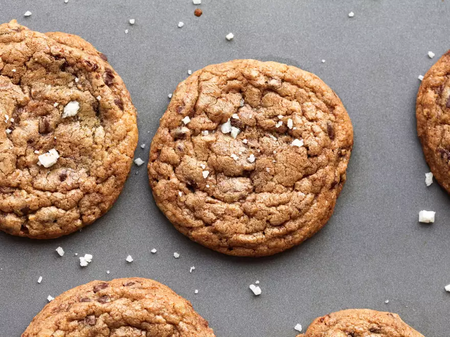

Chocolate Chip Cookies

Tale as old as time
After spending much of my life in search of the perfect chocolate chip cookie,
I decided to take matters into my own hands and just make them myself.
What follows is the best way I've found to make chocolate chip cookies, and now you can too.
Ingredients
- 8 ounces unsalted butter (2 sticks; 225g)
- 1 standard ice cube
- 10 ounces all-purpose flour
- 3/4 teaspoon (3g) baking soda
- 2 teaspoons Diamond Crystal kosher salt or 1 teaspoon table salt (4g)
- 5 ounces granulated sugar (about 3/4 cup; 140g)
- 2 large eggs
- 2 teaspoons (10mL) vanilla extract
- 5 ounces dark brown sugar (about 1/2 tightly packed cup plus 2 tablespoons; 140g)
- 8 ounces (225g) semisweet chocolate, rougly choopped with a knife into 1/2- to 1/4 inch chunks
- Coarse sea salt, for garnish
Steps
- Melt butter in a medium saucepan over medium-high heat. Cook, gently
swirling pan constantly, until particles begin to turn golden brown and
butter smells nutty, about 5 minutes. Remove from heat and continue
swirling the pan until the butter is a rich brown, about 15 seconds
longer. Transfer to a medium bowl, whisk in ice cube, transfer to
refrigerator, and allow to cool completely, about 20 minutes, whisking
occasionally. (Alternatively, whisk over an ice bath to hasten the
process.)
- Meanwhile, whisk together flour, baking soda, and salt in a large bowl.
Place granulated sugar, eggs, and vanilla extract in the bowl of a stand
mixer fitted with the whisk attachment. Whisk on medium-high speed
until mixture is pale brownish-yellow and falls off the whisk in thick
ribbons when lifted, about 5 minutes.
- Fit paddle attachment onto mixer. When brown butter mixture has cooled
(it should be just starting to turn opaque again and firm around the
edges), add brown sugar and cooled brown butter to egg mixture in stand
mixer. Mix on medium speed to combine, about 15 seconds. Add flour
mixture and mix on low speed until just barely combined, with some dry
flour still remaining, about 15 seconds. Add chocolate and mix on low
speed until dough comes together, about 15 seconds longer. Transfer to
an airtight container and refrigerate dough at least overnight and up to
3 days.
- When ready to bake, adjust oven racks to upper- and lower-middle
positions and preheat oven to 325°F (160°C). Using a 1-ounce ice cream
scoop or a spoon, place scoops of cookie dough onto a nonstick or
parchment-lined baking sheet. Each ball should measure approximately 3
tablespoons in volume, and you should be able to fit 6 to 8 balls on
each sheet. Tear each ball in half to reveal a rougher surface, then
stick them back together with the rough sides facing outward. Transfer
to oven and bake until golden brown around edges but still soft, 13 to
16 minutes, rotating pans back to front and top to bottom halfway
through baking.
- Remove baking sheets from oven. While cookies are still hot, sprinkle
very lightly with coarse salt and gently press salt down to embed. Let
cool for 2 minutes, then transfer cookies to a wire rack to cool
completely.
- Repeat steps 3 through 5 for remaining cookie dough. Allow cookies to
cool completely before storing in an airtight container, plastic bag, or
cookie jar at room temperature for up to 5 days.